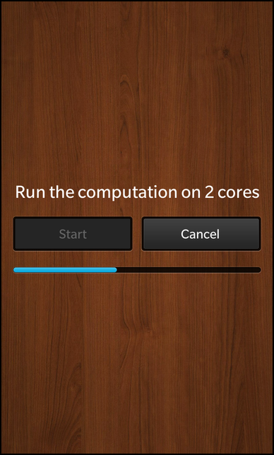

Files:
The QtConcurrent Progress Dialog example shows how to use the QFutureWatcher class to monitor the progress of a long-running operation.

In this example we'll learn how to use the QFuture class of the QtConcurrent module to execute a long lasting operation in a separated thread and how to monitor the progress and state with the QFutureWatcher class.
The UI of this sample application consists of two buttons, one to start the operation and one to cancel it. The progress of the operation is visualized by a progress bar. Above the two buttons is a label that shows the number of CPU cores that are used for the calculation.
The business logic of the application is encapsulated in the class ProgressDialog, which is exported to the UI as '_progressDialog'.
Label { horizontalAlignment: HorizontalAlignment.Center text: qsTr("Run the computation on %1 cores").arg(_progressDialog.numberOfCores) textStyle { color: Color.White base: SystemDefaults.TextStyles.TitleText } }
The text of the label contains a placeholder, which gets substituted with the number of cores as reported by the ProgressDialog object.
Button { text: qsTr ("Start") enabled: !_progressDialog.active onClicked: _progressDialog.startComputation() } Button { text: qsTr ("Cancel") enabled: _progressDialog.active onClicked: _progressDialog.cancelComputation() }
When the user clicks the 'Start' or 'Cancel' button, the startComputation() and cancelComputation() slots of the ProgressDialog object are invoked. Additionally the state of the buttons changes depending on whether a calculation is running or not.
ProgressIndicator { horizontalAlignment: HorizontalAlignment.Center topMargin: 40 // Show the progress bar only when computation is running opacity: _progressDialog.active ? 1.0 : 0.0 fromValue: _progressDialog.progressMinimum toValue: _progressDialog.progressMaximum value: _progressDialog.progressValue }
The progress properties of the progress bar (provided by Cascades' ProgressIndicator class) are bound against the progress properties of the ProgressDialog app object, so that they get updated automatically. The progress bar is only visible while the calculation is running.
The ProgressDialog is the central class in this sample application that contains all the business logic. It provides the two slots to start and cancel the calculation and properties that reflect the state and progress of the calculation. ProgressDialog contains a QFutureWatcher as member variable, which is used to monitor the progress and state of a QFuture instance. For this the signals of the future watcher are connected against private slots inside the constructor of ProgressDialog.
ProgressDialog::ProgressDialog() : m_progressMinimum(0) , m_progressMaximum(0) , m_progressValue(0) { // Forward state change signals from the watcher to our 'active' property connect(&m_futureWatcher, SIGNAL(started()), this, SIGNAL(activeChanged())); connect(&m_futureWatcher, SIGNAL(finished()), this, SIGNAL(activeChanged())); // Monitor progress changes of the future to update our own properties connect(&m_futureWatcher, SIGNAL(progressRangeChanged(int, int)), this, SLOT(progressRangeChanged(int, int))); connect(&m_futureWatcher, SIGNAL(progressValueChanged(int)), this, SLOT(progressValueChanged(int))); connect(&m_futureWatcher, SIGNAL(finished()), this, SLOT(calculationFinished())); }
When the user clicks the 'Start' button in the UI, the startCalculation() slot is invoked
void ProgressDialog::startComputation() { // Prepare the vector QVector<int> vector; for (int i = 0; i < 40; ++i) vector.append(i); /** * Start the computation. * The returned Future object is just a handle to the running operation, which * is executed asynchronously in separated threads. */ const QFuture<void> future = QtConcurrent::map(vector, spin); // Let the future watcher monitor the progress of this Future m_futureWatcher.setFuture(future); }
Inside this slot, a vector is filled with some dummy value that act as input values for the calculation. Then the actual calculation is started by calling QtConcurrent::map(). This method from the QtConcurrent module takes a container and a function as parameters and executes the function once for each entry in the container in a separated thread. The function we use in this example just burns some CPU cycles:
void spin(int &iteration) { Q_UNUSED(iteration) const int work = 1000 * 1000 * 40; volatile int v = 0; for (int j = 0; j < work; ++j) ++v; }
However the call to QtConcurrent::map() does not block until the calculation has finished but returns a QFuture object instead, which acts as a handle to monitor the progress and state of the calculation.
We set the returned future on the future watcher member variable and now the future watcher will emit the appropriated signals as soon as the future changes its progress or state.
When the user wants to cancel the calculation and clicks on the 'Cancel' button, then the cancelCalculation() slot is invoked, which calls cancel() on the QFutureWatcher object. This will cause the running calculation (and the used threads) to terminate.
void ProgressDialog::cancelComputation() { // Stop the computation m_futureWatcher.cancel(); }
Internally the QtConcurrent module uses the QThreadPool class for distributing the calculation over multiple threads. The thread pool uses as many threads in parallel as returned by QThread::idealThreadCount(), which by default is the number of cores of the device the application is running on. The 'numberOfCores' property uses the same value:
int ProgressDialog::numberOfCores() const { /** * The QtConcurrent framework uses QThreadPool::globalInstance() * for computation and that one uses as many thread contexts as * returned by QThread::idelThreadCount(). */ return QThread::idealThreadCount(); }